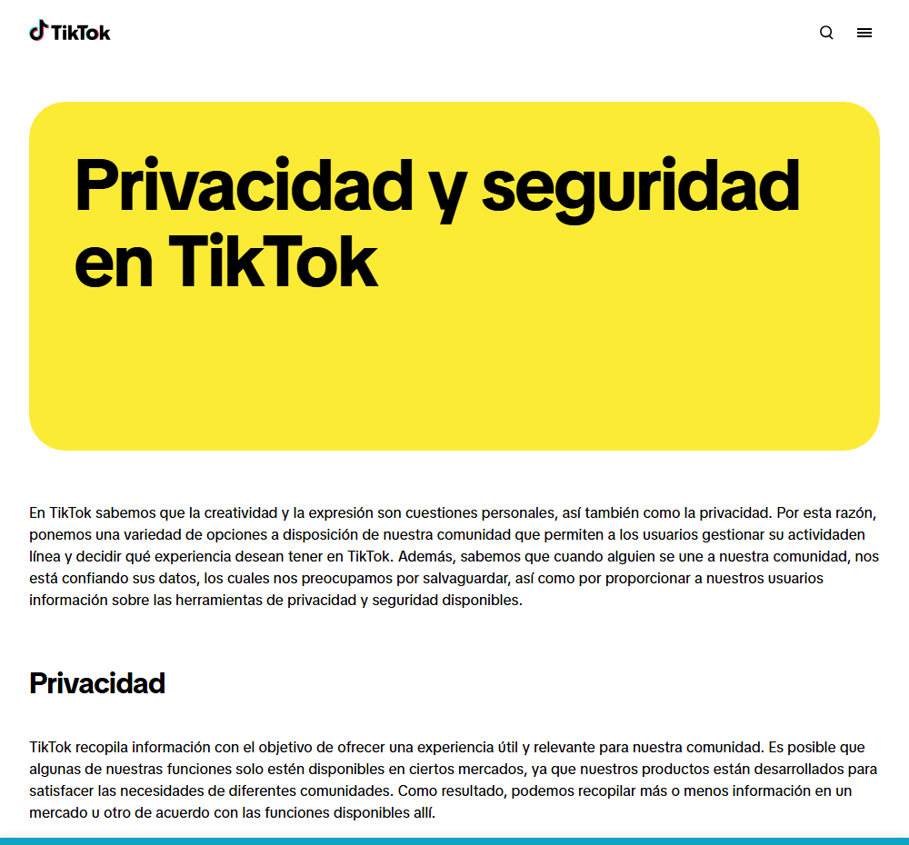

Configurar la privacidad paso a paso
Aprenderás a revisar y ajustar la privacidad de tus cuentas: quién ve tu contenido y quién puede contactarte.
Configurar la privacidad paso a paso
Por defecto, casi todo es público
Cuando creas una cuenta nueva, la mayoría de redes sociales vienen configuradas para que cualquiera pueda ver tu contenido: es lo que más beneficia a la plataforma, no necesariamente a ti. Revisar la privacidad es el primer paso, no un extra opcional.
PRIVACIDAD en Internet ¿Cómo preservarla? · canal oficial Internet Segura for Kids (IS4K) / INCIBE en YouTube
Por qué es importante preservar tu privacidad en Internet y cómo empezar a hacerlo.
Esto no te lo decimos solo nosotros: las propias plataformas dedican páginas enteras a explicarlo. Así empieza, por ejemplo, el Centro de Seguridad de TikTok:

TikTok explica en su propio Centro de Seguridad que ofrece «una variedad de opciones» para que decidas qué experiencia quieres tener.
Captura real de tiktok.com/safety (23/09/2026). El aspecto de la web puede cambiar con el tiempo.
Los ajustes que de verdad importan
- 🔒 Cuenta privada: solo quien apruebes puede ver tus publicaciones y tus seguidores.
- 🏷️ Etiquetas y menciones: revisa quién puede etiquetarte y activa la revisión antes de que una etiqueta aparezca en tu perfil.
- 💬 Mensajes de desconocidos: configúralos para que no lleguen a tu bandeja principal.
- 📍 Ubicación: desactiva el GPS para la app, o al menos no lo actives al publicar.
- 👀 Quién ve tu actividad: muchas apps permiten ocultar si estás «en línea» o si has leído un mensaje.
Dónde encontrar estos ajustes (idea general)
- Entra en tu perfil y busca el icono de menú (☰) o engranaje ⚙️.
- Busca un apartado llamado Privacidad, Privacidad y seguridad o similar.
- Revisa, una por una, las opciones de cuenta privada, etiquetas, mensajes y ubicación.
- Repite la revisión cada pocos meses: las apps cambian sus menús y a veces reactivan opciones.
La Agencia Española de Protección de Datos (AEPD) publica guías gratuitas con recomendaciones prácticas de privacidad para jóvenes.
No solo es la cuenta: también las apps conectadas
Muchas veces iniciamos sesión en otras apps o juegos «con Instagram» o «con Google». Cada una de esas apps puede acceder a parte de tu información. Conviene revisar de vez en cuando qué aplicaciones tienen acceso y quitar las que ya no uses.
🧩 Configuración por defecto
Al crear una cuenta nueva, ¿cómo suele venir configurada la privacidad?
🧩 Ubicación en las fotos
¿Qué es lo más prudente respecto a la ubicación al publicar en redes?